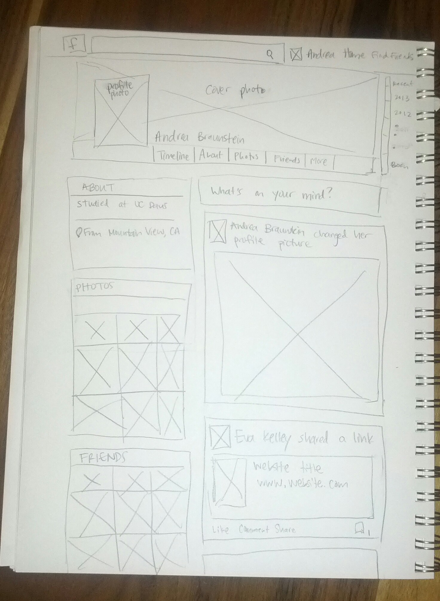

The problem the Facebook profile page is solving is communicating a lot of information in a small amount of space and making clear pathways for where the user wants to redirect. The visual challenge is to make things look clear and clean, rather than cluttured, while still fitting all the information on the page. It is also to have a unique feel for each user put still maintain a consistent appearance across all pages of the site.
